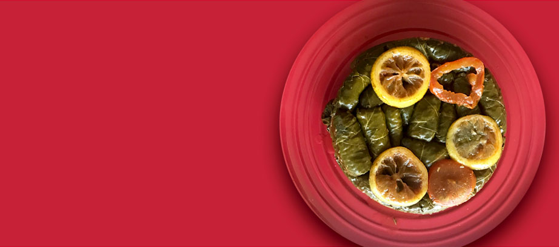

DOLMAS - STUFFED GRAPE LEAVES
Dolma, in Middle Eastern and Greek cuisine, any of various stuffed vegetable dishes—notably, The young leaves of the grapevine stuffed with a lemon-flavoured mixture of rice, onion, and, frequently, ground lamb. Depending on where you are in the world, stuffed grape leaves feature a simple rice and onion pilaf that includes meat (usually ground beef or ground lamb), vegetables, or neither—cooked in broth until soft.